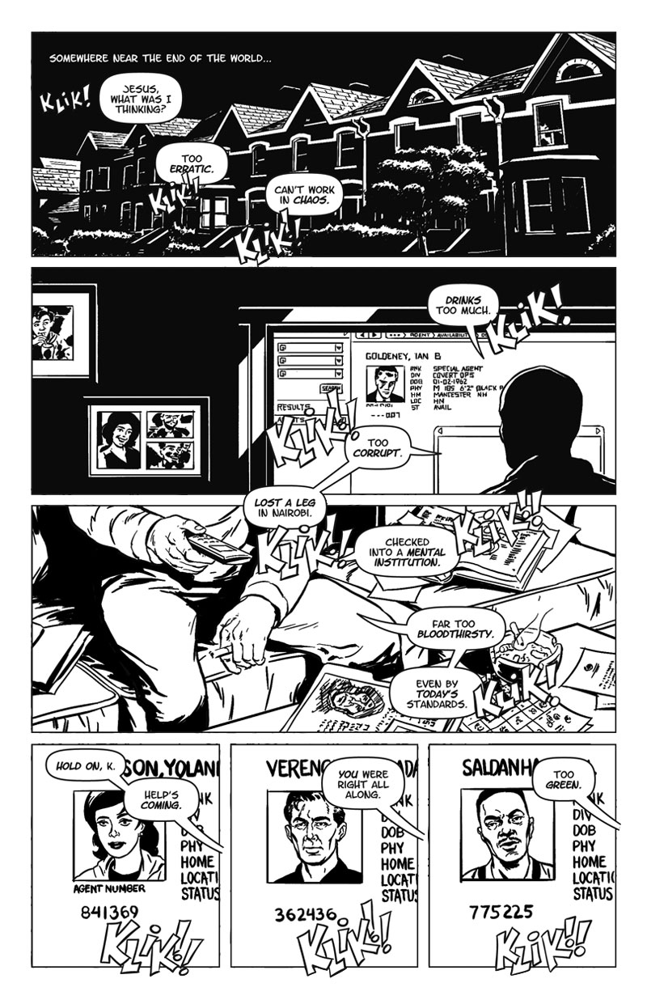
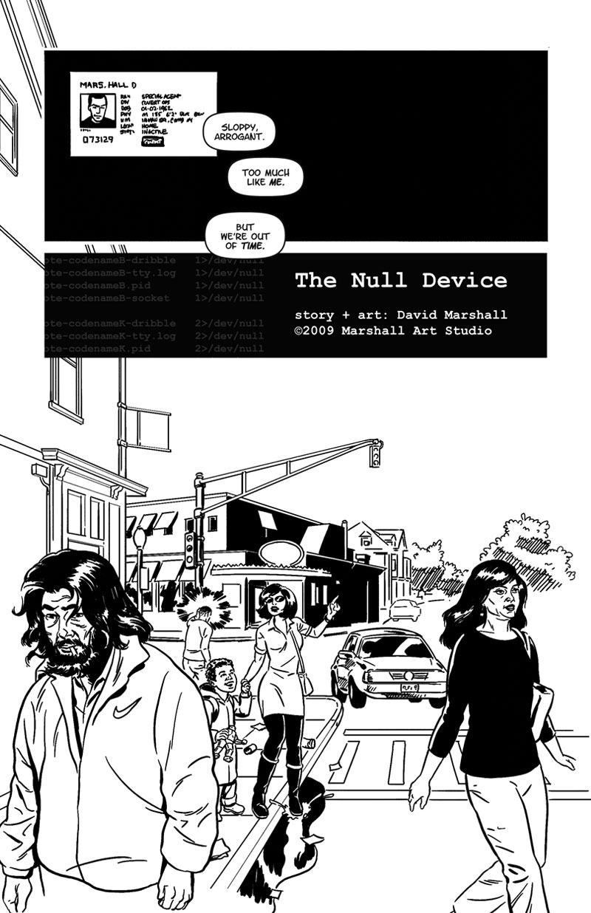
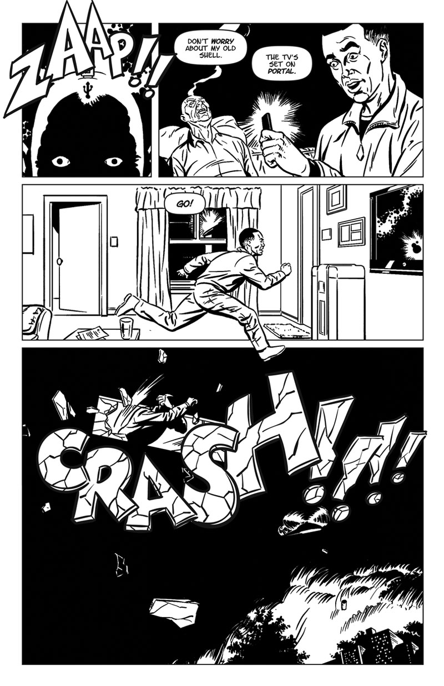
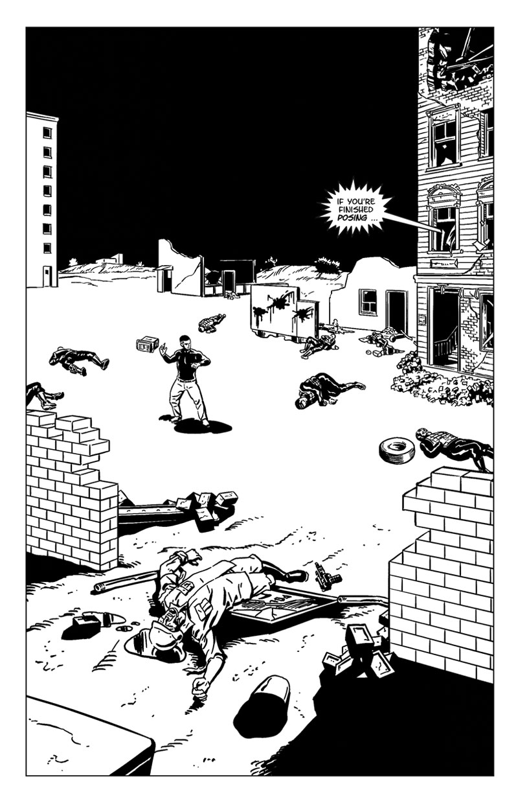
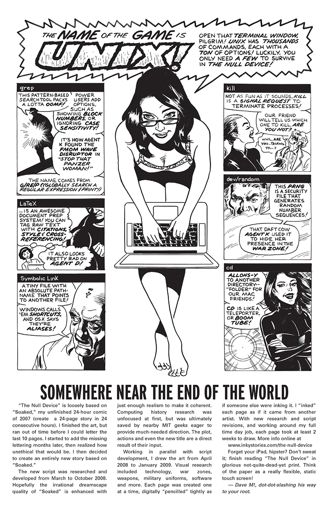

The Null Device
A lone agent must transmit data into enemy territory, fight an army, rescue a damsel in distress and save the world. Published in Outbound, a science fiction anthology by the Boston Comics Roundtable
Inky Stories #6: Front Cover
{kind=link}
{kind=link}
{kind=link}
{kind=link}
The Null Device: Page 1 of 26
The Null Device: Page 2 of 26
The Null Device: Page 3 of 26
The Null Device: Page 4 of 26

The Null Device: Page 5 of 26
The Null Device: Page 6 of 26
The Null Device: Page 7 of 26
The Null Device: Page 8 of 26
The Null Device: Page 9 of 26
The Null Device: Page 10 of 26
The Null Device: Page 11 of 26
The Null Device: Page 12 of 26
The Null Device: Page 13 of 26

The Null Device: Page 14 of 26
The Null Device: Page 15 of 26
The Null Device: Page 16 of 26
The Null Device: Page 17 of 26
The Null Device: Page 18 of 26
The Null Device: Page 19 of 26
The Null Device: Page 20 of 26
The Null Device: Page 21 of 26
The Null Device: Page 22 of 26
The Null Device: Page 23 of 26
The Null Device: Page 24 of 26
The Null Device: Page 25 of 26
The Null Device: Page 26 of 26
Inky Stories #6: Agent K Unix Tips
Inky Stories #6: Inman Square Variant Front Cover
Inky Stories #6: Pulp Variant Front Cover
Story Notes
This story is loosely based on "Soaked", my unfinished 24-hour comic of 2007. I really wanted to work on a comic for Spring of 2008, and started adding the missing lettering to "Soaked". Since this is an unethical violation of the 24-Hour Comics, I decided to create an entirely new story based on "Soaked".
The new script was researched and developed from March to October 2008. I tried expressing the irrational dreamscape qualtiy of "Soaked" with just enough realism to make it coherent. To that end, I needed a greater understanding of computing. Research started off as an unfocused time drain, but was ultimately saved by nearby MIT geeks eager to provide some much-needed direction. The plot, actions and even the new title are a direct result of their input.
Working in parallel with script development, I made the art from April 2008 to January 2009. Visual research included technology, war zones, weapons, military uniforms, software and more. Each page was created one at a time, digitally "pencilled" tightly as if someone else were inking it. I "inked" each page as if it came from another artist. With new research and script revisions, and working around my full time day job, each page took at least 2 weeks to draw.
Like "Zip’s Last Day" and "Dead by the Pool", no trees were harmed in the production or creation of this comic.
Tools and Materials
- Apple PowerBook G4
- Wacom Drawing Tablet
- Apple TextEdit, Adobe Photoshop + Illustrator + InDesign, Corel Painter
- Letter-O-Matic font
- Google Web + Image Search
- My digital art process for making comics
Dave M!, dot-dot-slashing his way to your root.